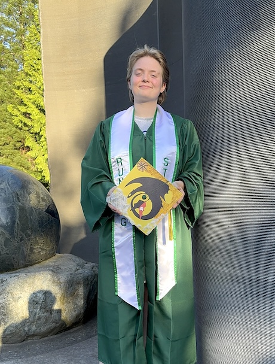

Resume
Brooklin Carter
Email: carter.brooklin@student.greenriver.edu
Mobile Number: 253-331-3059
Summary
I am a Computer Science student at Green River College with a strong passion for coding, especially Java. I enjoy learning new technologies, solving programming problems, and creating creative projects. I am motivated to continue developing my technical skills while gaining professional experience in the technology field. I am all about learning, growing, and making things that feel uniquely me.

Work History
Papa Murphy's (July 2026-current)
- Assist an average of 30+ customers per shift with orders and questions.
- Proccess customer transactions accurately and efficiently.
- Collaborate with team members to complete orders efficiently.
Fred Meyer (2026)
- Assisted customers with questions and product needs.
- Processed customer transactions accurately.
- Organized merchandise and maintained an orderly department.
Auburn School District (2023-current)
- Tutor and assist students with assignments, questions, and problem-solving.
- Supervise students and maintain a safe, organized environment during school activities.
- Communicate effectively with students, staff, and other school personnel.
- Adapt explanations and tutoring approaches to meet individual student needs.
Technical Skills and Projects
Personal Portfolio Website
- Developed a personal portfolio website using HTML and CSS.
- Organized website content, images, and styling across multiple files.
- Used GitHub to manage and publish project files.
Technical Skills
- Programming languages: Java, C++.
- Web Development: HTML, CSS, JavaScript.
- Tools: Git, GitHub, Visual Studio Code.
Education and Achievements
- Associate Degree, Green River College.
- Green River College Dean's List.